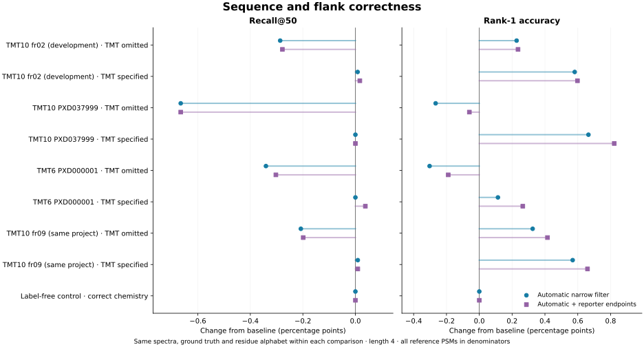
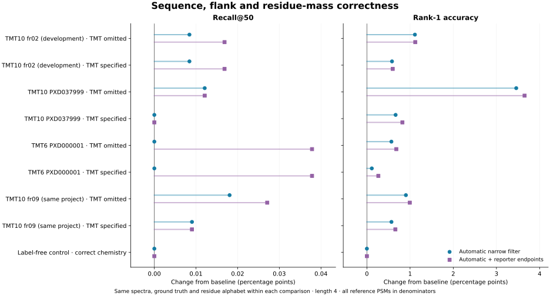

FASTag feature experiment · 11 November 2026 · branch feat/tmt-pseudo-tag-filter · implementation 7eadc4e
The detector activated on all four TMT6/10 files and abstained on the label-free control. With TMT specified in the residue masses, automatic filtering improved rank-1 accuracy in every TMT file, with no paired losses of correct rank-1 calls or recall. Recall itself was essentially unchanged. With TMT omitted, the paper's existing correctness metric showed recall losses in every TMT file and rank-1 losses in both independent validation projects.
Recommendation: keep this feature experimental and off by default. Use the filter with known TMT chemistry when cleaner top-ranked tags are the objective. Automatic detection currently switches filtering on; it does not add TMT modifications to the tagger's residue alphabet. Detecting a label and modeling its mass are separate operations.
PXD037999 and PXD000001 contribute 10,912 reference PSMs. With TMT specified, rank-1 accuracy rose from 81.562% to 82.093% (+58 correct calls, +0.532 percentage points). Recall@50 stayed at 94.630% (10,326 correct spectra). With TMT omitted, rank-1 accuracy fell from 82.203% to 81.928% (−30), and recall fell from 95.115% to 94.529% (−64).
Across all four TMT files, including the development file and a second file from its project, TMT-specified rank-1 accuracy rose 86.971% → 87.532% (+190); recall changed 97.643% → 97.649% (+2). These 33,854 PSMs are a descriptive pooled result, not four independent project replications.
A tag or its reverse must match the reference sequence (I/L equivalent) and have at least one correct flank at that same placement, within 0.05 Da. Recall@50 asks whether any of the first 50 tags is correct; rank-1 accuracy asks whether the first tag is correct. All reference PSMs remain in the denominator, including spectra with no tag. Tables compare baseline → automatic narrow filtering.
| File | Reference PSMs | Recall@50 (%) | Δ correct | Rank-1 (%) | Δ correct |
|---|---|---|---|---|---|
| PXD004541_fr02 | 11,870 | 99.267 → 99.275 | +1 | 89.966 → 90.548 | +69 |
| PXD037999 | 8,270 | 94.196 → 94.196 | +0 | 80.967 → 81.632 | +55 |
| PXD000001 | 2,642 | 95.988 → 95.988 | +0 | 83.422 → 83.535 | +3 |
| PXD004541_fr09 | 11,072 | 98.871 → 98.880 | +1 | 89.090 → 89.659 | +63 |
| File | Reference PSMs | Recall@50 (%) | Δ correct | Rank-1 (%) | Δ correct |
|---|---|---|---|---|---|
| PXD004541_fr02 | 11,870 | 99.410 → 99.124 | -34 | 90.025 → 90.253 | +27 |
| PXD037999 | 8,270 | 94.800 → 94.135 | -55 | 81.765 → 81.499 | -22 |
| PXD000001 | 2,642 | 96.101 → 95.761 | -9 | 83.573 → 83.270 | -8 |
| PXD004541_fr09 | 11,072 | 99.025 → 98.817 | -23 | 89.144 → 89.469 | +36 |

Consider a peptide ending in TMT-labeled lysine. A tag ending in bare K can have the correct amino-acid
sequence and correct N flank while placing the missing 229.162932 Da label in its C gap.
The paper metric accepts it. The filter's bare-K rule deletes it.
For example, the synthetic peptide [+229.162932]-AGPEPK[+229.162932]
admits PEPK with N gap 357.221510 Da and C gap 229.162932 Da:
sequence and N placement are right, but the tag assigns no modification to K.
An independent audit of every lost-recall spectrum found that all 124 losses
were caused by the bare-K rule, none by the G/A rules (35 fr02, 55 PXD037999,
9 Erwinia, 25 fr09). Each had exactly one paper-correct baseline tag, which failed strict
residue-mass correctness. For a real example, fr02 scan 8236 has reference
[+229.16293]-VTGGAASK[+229.16293]; the deleted rank-10 tag
AASK has N gap 543.3225 Da and C gap 229.1628 Da.
The net recall change is −121 after three newly recalled spectra.
All 124 cases and their rule assignments
are retained. Preserving or reannotating these terminal K tags is the next refinement to test;
a G/A-only counterfactual has not been benchmarked here.
The supplementary strict residue-mass metric additionally requires every tag residue's fixed-plus-variable mass to match the reference within 0.02 Da. With TMT omitted, automatic filtering increased strict rank-1 accuracy on the two independent files from 78.904% to 81.662% (+301), with no strict paired losses; strict recall changed by only +1. This is improved chemical consistency, not evidence that the primary recall loss disappeared.

The detector uses a deterministic probe of up to 1,024 eligible MS2 spectra spread across the input, four-residue ungapped tags and E ≤ 1 evidence. It counts distinct spectra, not tag rows. Let L = 229.162932 Da, W = 18.010565 Da, and K = 128.094963 Da.
probe = four-residue, ungapped tags from sampled MS2 spectra
eligible = spectra with at least one qualifying tag
N_evidence = spectra with n ≈ L or c ≈ L − W
K_evidence = spectra with c ≈ K + L or n ≈ K + L + W
threshold = max(20, ceil(0.01 × count(eligible)))
activate only if count(eligible) ≥ 100 and both evidence counts ≥ threshold
abstain if analogous TMTpro evidence passes, or tolerance is specified in Da
for each scored candidate, before deduplication and the top-50 cap:
reject BY tags with unmodified G/A at a matching TMT-split boundary:
first G/A and n ≈ L − residue_mass
last G/A and c ≈ L − W − residue_mass
reject BY tags ending in bare K with c ≈ L
(disabled when K has a fixed shift; variable-modified K is protected)
optionally reject charge-1 BY tags whose c + W + proton is a TMT reporter
retain candidate scores and E-values; refill output slots from remaining tags
N-flank windows are ±0.020 Da and C-flank windows ±0.006 Da. Ordinary residue flanks, TMT-plus-residue flanks, and a-ion counterparts are not broadly removed. The detector does not use reporter ions, which are shared with other isobaric labels. The full frozen specification is in TMT-PSEUDO-FILTER-PROTOCOL.txt. The 229.162932 Da modification is documented by Unimod 737; the label mass differs from the approximately 126–131 m/z reporter ions.
All automatic decisions were identical across three repetitions and both chemistry configurations. Automatic and forced-on outputs were byte-identical on every TMT file. Automatic output, including the reporter option, was byte-identical to baseline on the label-free control (8,254 PSMs; recall 93.930%, rank-1 67.095%). This small control set does not establish general detection sensitivity or specificity.
| File | Chemistry | Probe diagnostic |
|---|---|---|
| PXD004541_fr02 | label_blind | '/scratch/kohlbach/fastag-tmt-filter-20261111/data/PXD004541_fr02/HF1_201501212_GM_RJ1511D_TMT10_hpHRP_DMSO1_2p5ug_4uL_fr02.mzML' has no index, or one that no longer matches the file (edited after it was written?); found its 46803 spectra by scanning it instead (0.02 s). Re-index it, e.g. with FileConverter, to skip the scan. | TMT pseudo-filter (auto): on; TMT6_10_two_site_evidence; probed=1024; eligible=880, threshold=20, TMT_N=726, TMT_K=474, TMTpro_N=0, TMTpro_K=0; reporters=off |
| PXD004541_fr02 | label_aware | '/scratch/kohlbach/fastag-tmt-filter-20261111/data/PXD004541_fr02/HF1_201501212_GM_RJ1511D_TMT10_hpHRP_DMSO1_2p5ug_4uL_fr02.mzML' has no index, or one that no longer matches the file (edited after it was written?); found its 46803 spectra by scanning it instead (0.03 s). Re-index it, e.g. with FileConverter, to skip the scan. | TMT pseudo-filter (auto): on; TMT6_10_two_site_evidence; probed=1024; eligible=877, threshold=20, TMT_N=727, TMT_K=475, TMTpro_N=0, TMTpro_K=0; reporters=off |
| PXD037999 | label_blind | '/scratch/kohlbach/fastag-tmt-filter-20261111/data/PXD037999/220819_UM171_RCOR1_NB4_TMT10_F13_of_F13_R2.mzML' has no index, or one that no longer matches the file (edited after it was written?); found its 65596 spectra by scanning it instead (0.04 s). Re-index it, e.g. with FileConverter, to skip the scan. | TMT pseudo-filter (auto): on; TMT6_10_two_site_evidence; probed=1024; eligible=639, threshold=20, TMT_N=426, TMT_K=239, TMTpro_N=0, TMTpro_K=0; reporters=off |
| PXD037999 | label_aware | '/scratch/kohlbach/fastag-tmt-filter-20261111/data/PXD037999/220819_UM171_RCOR1_NB4_TMT10_F13_of_F13_R2.mzML' has no index, or one that no longer matches the file (edited after it was written?); found its 65596 spectra by scanning it instead (0.04 s). Re-index it, e.g. with FileConverter, to skip the scan. | TMT pseudo-filter (auto): on; TMT6_10_two_site_evidence; probed=1024; eligible=620, threshold=20, TMT_N=431, TMT_K=240, TMTpro_N=0, TMTpro_K=0; reporters=off |
| PXD000001 | label_blind | TMT pseudo-filter (auto): on; TMT6_10_two_site_evidence; probed=1024; eligible=790, threshold=20, TMT_N=508, TMT_K=414, TMTpro_N=2, TMTpro_K=0; reporters=off |
| PXD000001 | label_aware | TMT pseudo-filter (auto): on; TMT6_10_two_site_evidence; probed=1024; eligible=769, threshold=20, TMT_N=498, TMT_K=416, TMTpro_N=2, TMTpro_K=0; reporters=off |
| PXD004541_fr09 | label_blind | '/scratch/kohlbach/fastag-tmt-filter-20261111/data/PXD004541_fr09/HF1_201501216_GM_RJ1511D_TMT10_hpHRP_Drug2_2p5ug_4uL_fr09.mzML' has no index, or one that no longer matches the file (edited after it was written?); found its 44777 spectra by scanning it instead (0.02 s). Re-index it, e.g. with FileConverter, to skip the scan. | TMT pseudo-filter (auto): on; TMT6_10_two_site_evidence; probed=1024; eligible=822, threshold=20, TMT_N=698, TMT_K=462, TMTpro_N=0, TMTpro_K=0; reporters=off |
| PXD004541_fr09 | label_aware | '/scratch/kohlbach/fastag-tmt-filter-20261111/data/PXD004541_fr09/HF1_201501216_GM_RJ1511D_TMT10_hpHRP_Drug2_2p5ug_4uL_fr09.mzML' has no index, or one that no longer matches the file (edited after it was written?); found its 44777 spectra by scanning it instead (0.02 s). Re-index it, e.g. with FileConverter, to skip the scan. | TMT pseudo-filter (auto): on; TMT6_10_two_site_evidence; probed=1024; eligible=818, threshold=20, TMT_N=690, TMT_K=463, TMTpro_N=0, TMTpro_K=0; reporters=off |
| PXD003531 | control | TMT pseudo-filter (auto): off; insufficient_two_site_TMT_evidence; probed=1024; eligible=969, threshold=20, TMT_N=0, TMT_K=0, TMTpro_N=0, TMTpro_K=0; reporters=off |
Median elapsed seconds from three serial runs, eight threads on dax, warm file cache;
times include reading, detection, tagging and writing. Forced filtering alone cost approximately zero.
Automatic detection added 0.133–0.244 s on the TMT files: about 8–11% for the larger runs,
but 55% for the short Erwinia run. The label-free control added 0.384 s (12.2%).
| File | Chemistry | Baseline (s) | Forced on (s) | Automatic (s) | Δ s | Δ % |
|---|---|---|---|---|---|---|
| PXD004541_fr02 | label_blind | 2.936 | 2.942 | 3.18 | +0.244 | +8.3% |
| PXD004541_fr02 | label_aware | 2.963 | 2.958 | 3.188 | +0.225 | +7.6% |
| PXD037999 | label_blind | 1.319 | 1.317 | 1.454 | +0.135 | +10.2% |
| PXD037999 | label_aware | 1.385 | 1.383 | 1.518 | +0.133 | +9.6% |
| PXD000001 | label_blind | 0.347 | 0.347 | 0.539 | +0.192 | +55.3% |
| PXD000001 | label_aware | 0.354 | 0.358 | 0.547 | +0.193 | +54.5% |
| PXD004541_fr09 | label_blind | 1.91 | 1.911 | 2.097 | +0.187 | +9.8% |
| PXD004541_fr09 | label_aware | 1.922 | 1.932 | 2.125 | +0.203 | +10.6% |
| PXD003531 | control | 3.146 | 3.146 | 3.53 | +0.384 | +12.2% |
The separately benchmarked reporter filter gave small additional gains. On the two independent TMT-specified files it added another 17 correct rank-1 calls and one recalled spectrum over the narrow filter, bringing rank-1 to 82.249% (+75 versus baseline) and recall to 94.639% (+1). It can leave additional spectra without output, but no correct primary or strict calls were lost in the TMT-specified reference sets. It did not resolve the primary recall losses with TMT omitted. All counts, including tag-output coverage, are retained in summary.tsv.
The hypotheses and thresholds were frozen before scoring. fr02 from PXD004541 was development data; fr09 is another file from that project. PXD037999 and PXD000001 are independent project validation; PXD003531 is the label-free control. Reference PSMs are Sage rank-1 targets at spectrum q ≤ 0.01, with entrapment and decoy protein assignments excluded. These references are not error-free truth and do not measure performance on unidentified spectra.
Every comparison holds spectra, truth and chemistry configuration fixed. Tag length 4, extension 0, one ordinary two-residue gap, maximum 50 tags, E ≤ 20 before gap penalty 100, maximum 400 peaks, 10 peaks per window and 20 ppm fragment tolerance were used. TMT files retained their cysteine treatment and variable methionine oxidation. Erwinia truth also allows TMT on Y; this was omitted from both tagger arms. The control tagger uses oxidation and phosphorylation; its frozen truth also allows deamidation and N-terminal acetylation. Neither asymmetry changes between arms.
The five arms were baseline v1.13.1, new binary default/off, forced on, automatic, and automatic plus reporters: nine file/chemistry cells × five arms × three repetitions = 135 runs. All completed successfully and repeated outputs were identical. All nine default/off outputs matched baseline byte-for-byte. An independent audit rehashed every output and rechecked paired scoring. Code checks passed: 85 tests, four optional skips; GUI typecheck and 25 parameter tests also passed.
Only these high-resolution files, length 4 and no extension were benchmarked. There is no empirical TMTpro, mixed-label, partially labeled or low-resolution negative-control validation here. The TMTpro abstention path has unit coverage, not a measured dataset-level specificity estimate. Do not generalize to arbitrary acquisition modes or claim a downstream peptide-search improvement.
# Example: known TMT with automatic evidence-gated filtering FASTag -in run.mzML -out tags.tsv \ -fixed_modifications 'Carbamidomethyl (C)' 'TMT6plex (K)' 'TMT6plex (N-term)' \ -variable_modifications 'Oxidation (M)' -tmt_pseudo_filter auto # Add -tmt_reporter_filter for the separately benchmarked reporter rule. # Use -tmt_pseudo_filter on for known chemistry without the detection prepass. # Default is off. Automatic mode requires seekable mzML/MGF input.
Artifacts: all metrics · paired gains/losses · per-spectrum outcomes · commands and timings · input, truth, binary and scorer hashes · independent output audit · build and test record.
Raw outputs and run logs are retained at /ceph/ibmi/abi/oliver/fastag-tmt-filter-20261111/results;
input spectra, frozen reference tables and Sage configurations at
/ceph/ibmi/abi/oliver/fastag-tmt-filter-benchmark-20261111.
Run bench/tmt_pseudo_filter.py with the manifest's dataset and binary paths to reproduce;
the original command vectors are in the timing file.
Regenerate these plots with python bench/plot_tmt_pseudo.py RESULTS and this report with
python bench/report_tmt_pseudo.py RESULTS.